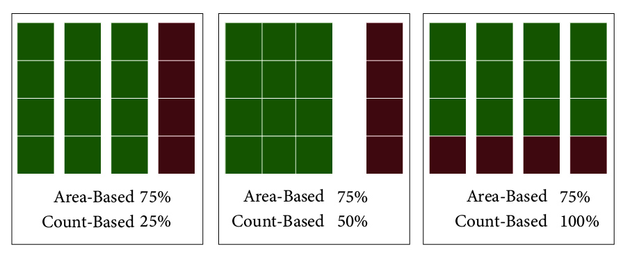
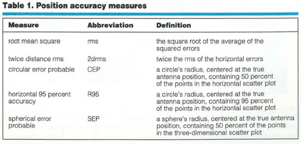
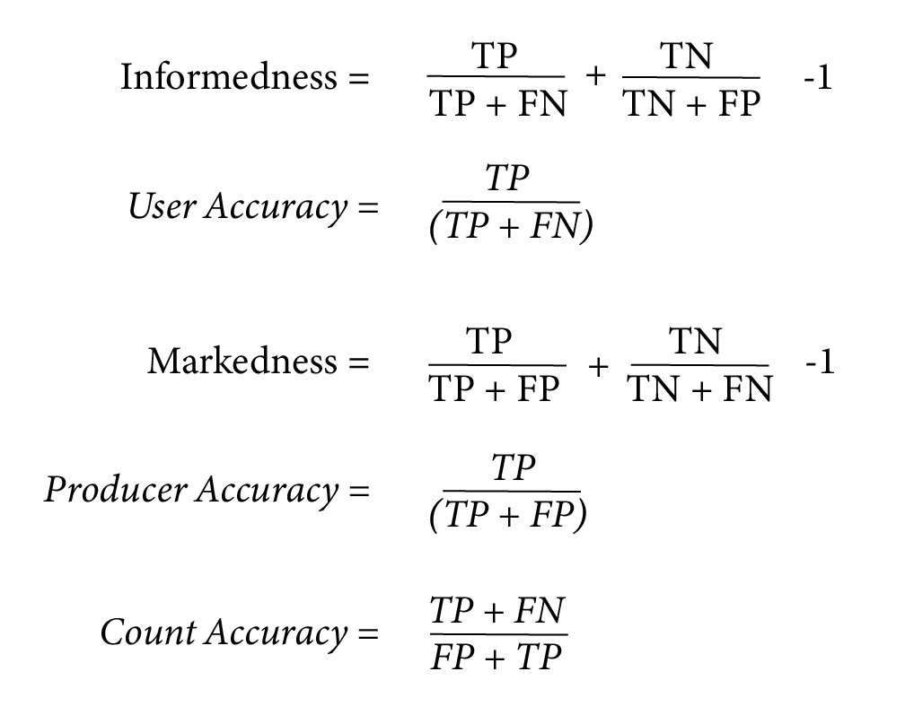
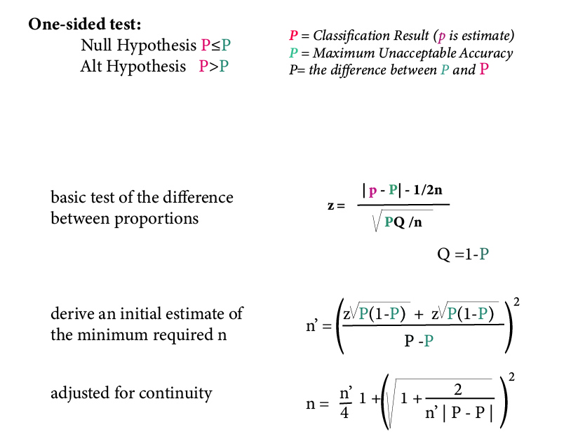
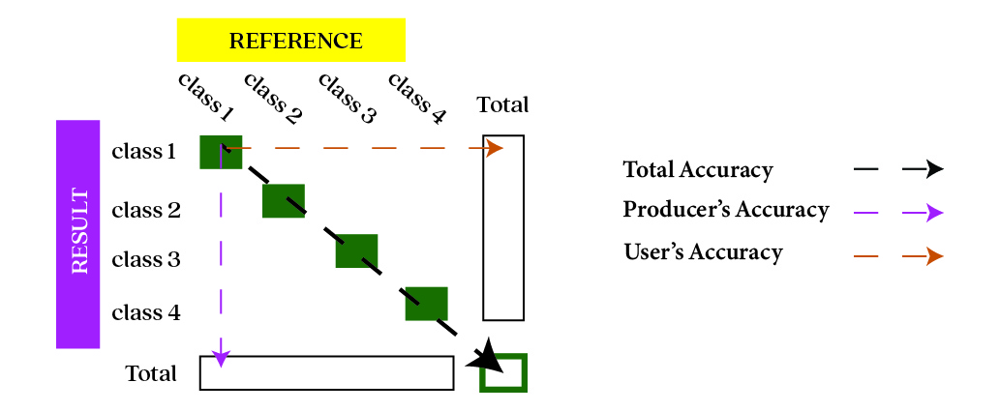

Accuracy Assessment
Accuracy v. Precision
While Accuracy is the quality of being correct, Precision is the degree to which measurements are near to each other

Remote Sensing Accuracy Assessment
compare the classified image to another data source that is considered to be accurate
Sources of Classification Error
- Improper class definitions (incomplete, overlapping, etc.)
- Incomplete or insufficient training data
- Mislabeling classes
- Spatial registration
- etc.
Dimensions of Accuracy
- Thematic / Class accuracy
- Boundary
Objectives of Image Analysis
- Wall to wall mapping (most common)
- Entity Detection
- Entity Delineation
- Enhanced pixel classification
Accuracy Assessment by Objective
- Count-based for detection applications
- Area-based for thematic region mapping
- Geometric assessment for delineation
Determining Accuracy Satisfaction
Test the accuracy of the map against a minimum acceptable accuracy
- specific application
- data
- Classes
Count-Based vs. Area-Based AA
- Pixel-based accuracy pixels are equal
- Object-based accuracy objects are NOT equal
Count-Based vs. Area Based AA
Accuracy Assessment Framework
- Analysis
- Response Design
- Sampling Design
Analysis
Selection of indices that result in probabilities of encountering certain types of misclassification errors.
Response Design
The choice of a type of sampling unit and the rules that allow the operator to decide if a sampling unit was correctly labeled (or not).
Response Design
- Sampling Unit - Polygons vs Pixels
- Contextual Definition Dependent upon Conceptual and Spatial Scale
- Rules for judgment (majority/minority)
Sampling Design
With pixel-based analysis the pixels are equal area
With polygons area is equal, so the larger polygons have more influence on accuracy
Sampling Polygons
- If using a set of points across the map, the area of the polygons affects the probability it is chosen for sampling
Sources for Ground Truth Data
- Existing Maps
- Field Data
- High-resolution imagery
- GIS Data
Choosing Ground Truth Data
- Choose a source that contains the correct information
- Choose a source that has the scale that is appropriate
- Choose a proper sampling design
Geometric Accuracy
- Boundary and Interior Considerations
- Structural quality (interior): over/under segmentation
- Positional quality (boundary): delineation errors, source errors
- Heterogeneity of area (parts vs. objects)
- Relationship between interior and boundary
Horizontal Accuracy

Accuracy Assessment - Entity Detection
- correct detection rates
- True Positives - Correct Identity
- True Negative - Correct Absense
- False Positive - Incorrect Identity
- False Negative - Incorrect Absense
- Note: TN is indeterminate because it would correspond to the background
Accuracy Assessment - Entity Detection
- User's accuracy - probability that a value predicted to be in a certain class really is that class
- Producer's accuracy - probability that a value in a given class was classified correctly
Analysis Indices

Impact of Segmentation
- Oversegmentation - False Positives
- Undersegmentation - False Negatives
Sampling
- Random - randomly placed observations
- Stratified - Minimum number of observations randomized across classes
- Systematic - Samples are placed at equal intervals across the site
- Systematic Non-Aligned - Systematic grid is used to divide the site and random samples are taken within the grid cells
- Cluster - centroids are randomly placed across the site and nearby observations
- List-Based - choose a subset of the elements (the sample) from a listing of all elements (the sampling frame) using a specific selection process
Sampling
- Determine if an observation is an entity, continum, or a spatial region
- Car is an example of an entity
- Vegetation cover is an example of a continum
- Land Cover is an example of a spatial region
Estimating Sample Size
- Using a One-Sided T Test
- Significance level (alpha) - Type 1 Error
- Power (1 - beta) - Type 2 Error
- Effect size - minimum meaningful difference
- Continuity Correction
Estimating Sample Size

Analysis Indices
- Overall Accuracy: Total number of correct plots / Total number of plots
- User's Accuracy: Number of Correct IDs for a Map Class/ Number Claimed to be in Map Class
- Producer's Accuracy: Number of Correct Reference Plots / Actual Number in Reference Class
- See: Link for detailed examples
Analysis Indices Continued
- Error of Omission: reference sites that were left out (or omitted) from the correct class (col)
- Error of Omission: Incorrectly Classified Reference Sites (per class) / Total Number of Reference Sites
- Error of Commision (FP): sites incorrectly assigned to a class (row)
- Error of Omission: Incorrectly Classified Sites (per class) / Total Number of Classified Sites
The Confusion/Error Matrix
